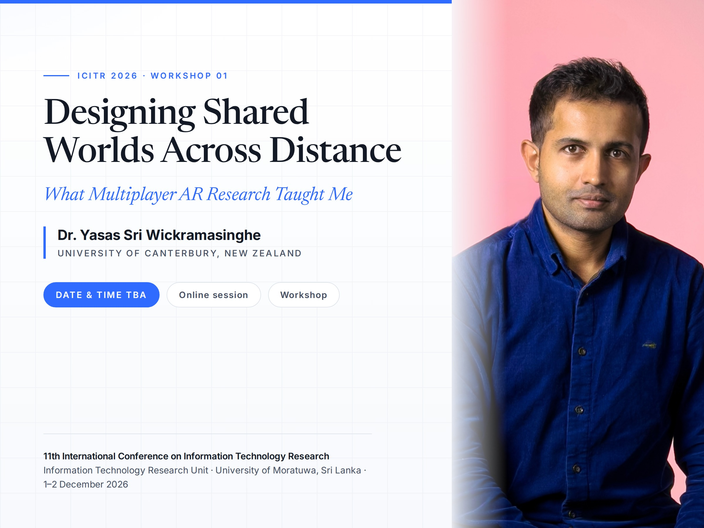

01
Upcoming Events

1 October 2026, 3:00 – 3:30 PM · NZ International Convention Centre, Auckland
NZGDC 2026 — Designing Shared Worlds Across Distance
I'm speaking at NZGDC 2026 (30 Sep – 3 Oct, Auckland) on “Designing Shared Worlds Across Distance: Lessons from Multiplayer AR Game Research” — covering real-time connections across distance, bridging places and people, and designing for presence, engagement and trust in multiplayer AR.
Learn more & register ↗
Date & time to be announced · Online session · ICITR 2026, University of Moratuwa
ICITR 2026 — Workshop 01: Designing Shared Worlds Across Distance
I'm leading Workshop 01 of ICITR 2026 — the 11th International Conference on Information Technology Research (1–2 December 2026), organised by the Information Technology Research Unit at the University of Moratuwa, Sri Lanka. “Designing Shared Worlds Across Distance: What Multiplayer AR Research Taught Me” explores the design and development of location-based multiplayer AR games, and how augmented reality becomes a core gameplay mechanic that connects remote players through shared immersive experiences. The date and time are still to be confirmed by the organisers.
See the ICITR workshop programme ↗